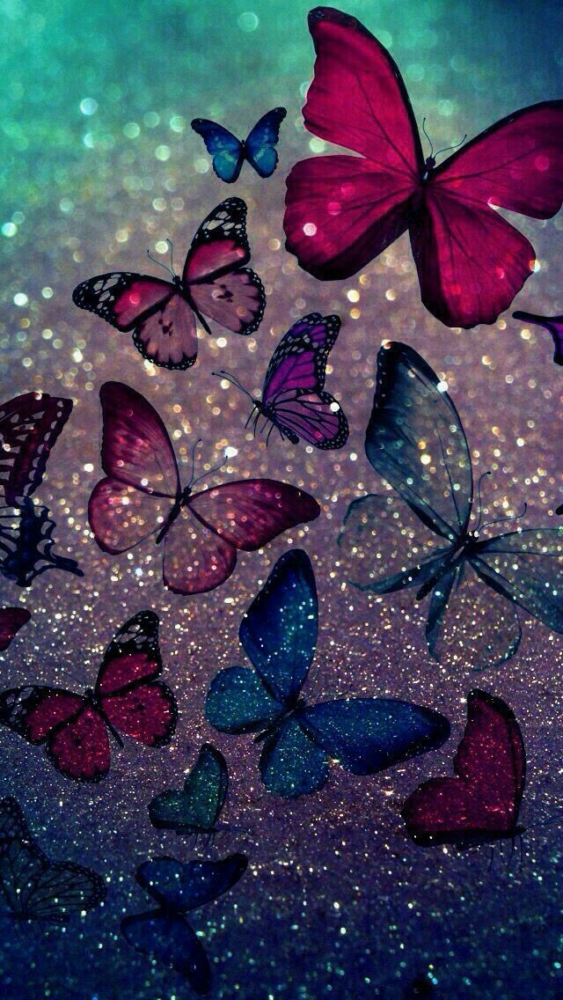
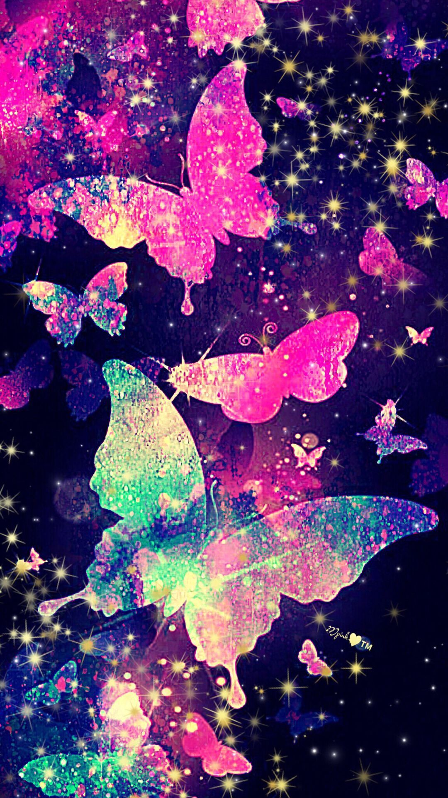

My Soul Animal - Butterfly
If I had an option to choose which animal I would become a "Butterfly"


Butterfly is very beautiful. But not only because its beautiful but it can fly to any place in the world. I too wan to fly all over the world and enjoy seeing the valleys full of flowers, Gardens full of greenery, forests with waterfalls and many more yet to discover. I would love doing so.
Seeing as a human, walking on the feet is actually a very nice experience. But seeing places as a butterfly will be more intreseting according to me. It would actually be more unforgetteble if compared. Flying to the places and reaching up to the sky!! It would actually be very nice. And I have ussually seen babies and small kids are always fond of colourful butterflies. So being butterfly I could even play with them. the presence of these butterflies as a joyous or hopeful sign.
They represent symbol of positivity and hope. Thus through being a butterfly I want to spread poitivity in people and hope in all the hearts.
Thus that's why i want to become a butterfly if i get a chance to become.


 